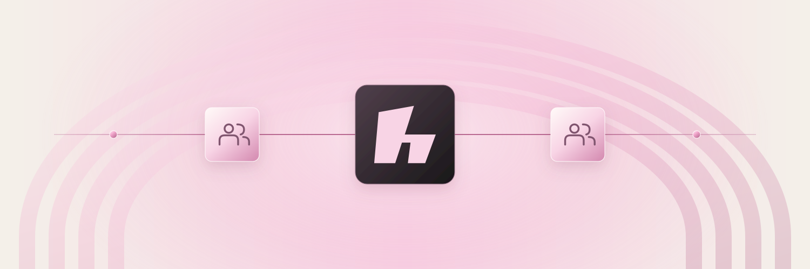
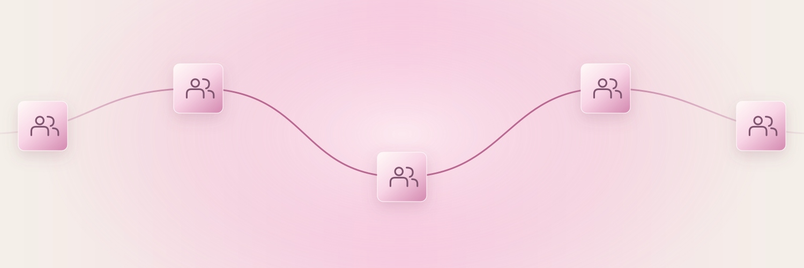
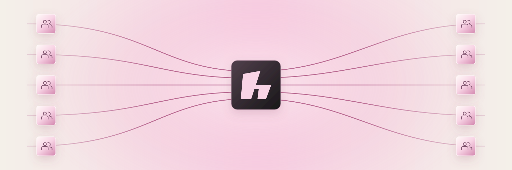
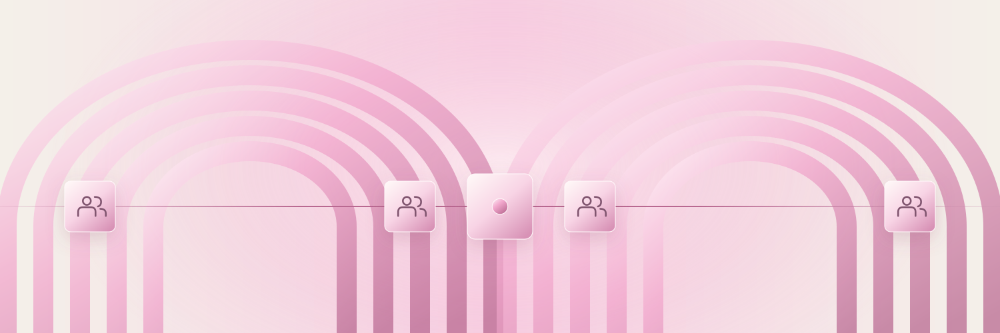
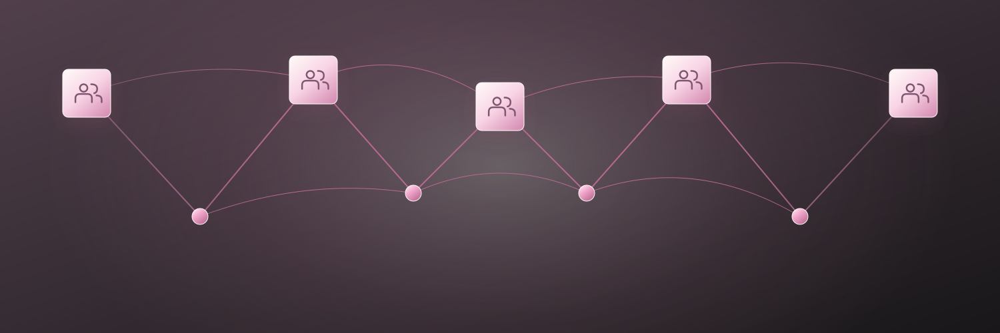
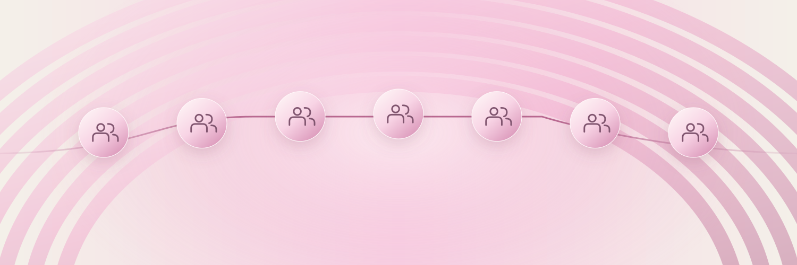

01 / The shared hausThe reference composition, softened into pearl community tiles linked through HAUS.SVG ↓PNG ↓
02 / One continuous threadEqual community tiles share a single flowing connection, without a central leader.SVG ↓PNG ↓
05 / Many paths, one placeSeparate groups converge through a common place and stay connected across it.SVG ↓PNG ↓
06 / Connected roomsTwo arch-shaped rooms join through a common thread and a shared threshold.SVG ↓PNG ↓
07 / Quiet constellationSmall groups and luminous points make an interconnected constellation.SVG ↓PNG ↓
08 / A place in the chainA linked row of equal community medallions sits within a soft oversized arch.SVG ↓PNG ↓